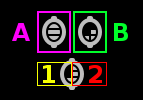
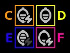
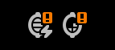
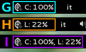
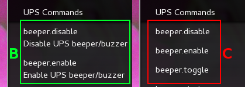

WHAT IS IT?
walNUT is nothing more than a Gnome Shell extension providing a graphical interface to NUT (Network UPS Tools). It provides you a handy panel menu and icon to monitor your devices and execute NUT’s instant commands.
Before you start, you need an already up and running NUT on the machine that will monitor the UPSes (it’s not necessary to have NUT installed on the same computer you want walNUT to run in, provided that it isn’t the one that’s in charge of communicating with the UPS): having said that, if everything goes well with upsc, upsrw and upscmd, chances are high that walNUT will work right out of the box.
|
|
Since the GJS implementation of NUT’s net protocol doesn’t support yet TLS, if you need it, you can get it using the walNUT version that relies on upsc, upsrw and upscmd: |
1. INSTALLATION
You can install this extension for your user by executing:
cd ~/.local/share/gnome-shell/extensions
git clone git://github.com/zykh/walNUT.git walnut@networkupstools
glib-compile-schemas walnut@networkupstools/schemas/After the installation you’ll need to restart Gnome Shell:
-
ALT+F2to open the command prompt -
Enter
rto restart Gnome Shell
Then you can enable the extension through Gnome Tweak Tool (Shell Extensions → walNUT → On) or through https://extensions.gnome.org/local/
|
|
Users of previous versions of walNUT, when upgrading, must always recompile the schema: |
2. FIRST EXECUTION
Once you’ve installed walNUT, when it’s executed for the first time, or every time its device list is empty, it’ll try and search automatically for new devices at localhost:3493.
So, for most installations, it should have already found your devices.
If not, you have to add them through the find new devices box.
It’s important that you understand how walNUT communicates with you and how you can customize it: please read panel icon/label, panel menu and preferences sections.
3. PANEL ICON/LABEL
walNUT's icon and label are customizable through the preferences.
Here is explained how they behave.
 |
The panel icon standardly displays only battery charge [A], but it can display also device load [B], if available. In case you set also to Display load in panel icon in the preferences and battery charge is not available, the left side of the ‘seed’ [3] will be full and transparent. |
 |
The panel icon displays also the state of the line: if the device is on line (mains is not absent, |
 |
For other status ( |
|
If battery charge is not available or if also Display load in panel icon option is selected in the preferences and both device load and battery charge aren’t available the icon will be a full transparent nut. |
|
That’s the icon displayed in case of errors. |
 |
walNUT can also display a label, at the right of the icon in the panel, with battery charge [G], device load [H] or both [I], if available. |
|
|
The icon shows charge/load through 3 bars:
|
4. PANEL MENU
Here’s a quick overview of the panel menu.
Standardly the menu looks like this:
You can also choose to use a more ‘noisy’ version, that could end up being more readable in some cases, setting the appropriate option in the preferences:
With all the available options set:
‘Noisy’ version:
The menu can be split up in various sections:
A |
|
B |
|
C |
|
D |
|
E |
|
F |
|
G |
|
H |
Box for control buttons' functions |
I |
In case of errors, the menu appears like this:
Where the device list [A] is visible or not, depending on the type of error [L].
4.1. DEVICE LIST
Devices are listed in hostname:port alphabetical order and then alphabetically by their name.
|
|
Every device stored in walNUT's own list will be prompted for availability every time you change some option or Gnome Shell is refreshed (e.g. return from screen block ..and so on) or 15 minutes after the last update. |
Not available devices are signaled with a (N/A) [A] at their right. You can choose either to display or not not available devices in the preferences.
4.2. DEVICE MODEL
If available both device manufacturer and device model will be shown here.
|
|
If your device isn’t providing one of device manufacturer/model or both or if you want a more appealing label, you can override one of them or both in ups.conf. |
You can choose whether to display or not this information changing its option in the preferences.
4.3. DEVICE STATUS
or (‘noisy’ version):
Device status will show: line status [A] (online/on battery), and then, on the second row, every status reported by the device [B] (bypass, trim, ..).
4.4. DEVICE ALARM
or (‘noisy’ version):
If an alarm is set (ups.status: ALARM and ups.alarm) it’ll be shown here.
|
|
An alarm will be signaled also through an ‘exclamation mark’ on the panel icon. |
4.5. DATA TABLE
or (‘noisy’ version):
If available, [A] battery charge, [B] device load, [C] backup time and [D] device temperature will be shown here.
Battery icon [1] will display actual charge through the number of horizontal bars (as the ones of panel icon).
You can choose whether to display or not these data changing their options in the preferences.
4.6. RAW VARS
If you want a deep dive in all the variables available for a device you have to select the Display raw data option in the preferences: raw vars will be displayed in a scrollable submenu.
If a variable is settable, a + will be shown at the left of its name: clicking on this var will open a new box where you’ll be able to change its value.
Clicking again on the variable will close the box: the changes done won’t be discarded so that you can go back and edit the var starting from where you left.
|
|
In order to set a variable you have to provide a valid username and password (as set in upsd.user configuration file). |
If the variable is of type ‘STRING’ you can insert a value in the text box [A]: if you then click on the ‘Set’ button [B] the provided value will be sent to the driver.
If you click on the ‘Undo and close’ button [C] the provided value will be discarded and the box closed.
|
|
In case you use a version of NUT >= 2.7.1 and if the provided value is longer than the acceptable length, you’ll be notified of the error and you won’t be able to click on the ‘Set’ button [B]. 
|
If the variable is of type ‘ENUM’, the enumerated values will be listed in the box: if you click on one of them [D] the corresponding value will be sent to the driver.
Also the actually chosen option will be shown, but it won’t be clickable [E].
If the variable is of type ‘RANGE’, the available ranges will be shown in the box and you’ll then be able to choose the one you need to use.
Once a range is chosen (provided that more than one range is available) [F], its limits [G, H] will be displayed at the right and left of the actual value [I].
You can then change the value either dragging the slider [J], or scrolling the mouse wheel over it or you can choose to increase or decrease the value by one unit at a time clicking on the -/+ buttons [K, L].
If you click on the ‘Set’ button [M] the provided value will be sent to the driver. If you click on the ‘Undo and close’ button [N] the provided value will be discarded and the box closed.
In case only one range is available, only its limits will be shown.
4.7. DEVICE COMMANDS

If you want to execute NUT’s instant commands through walNUT you have to set the Display device commands option in the preferences.
You can also pass to the command some extra data filling, before you click on the command, the entry [A] that will appear next to the device commands submenu when it is opened.
Note that, when you click on a command, it’ll be executed.
|
|
walNUT standardly displays also a localized description of the commands [B], but if you think that it steals too much space you can set not to display it [C] in the preferences.

|
Once a command has been executed, you’ll be notified whether it has been successfully sent to the driver [D] or not [E].
4.8. CONTROL BUTTONS
or (‘noisy’ version):
At the bottom of the panel menu there’s a handful of control buttons, some of which will open their own box [A] just before the controls row [B].
The buttons will show:
4.9. CREDENTIALS BOX
Clicking on the ‘credentials’ button [A] the credentials box [B] will open. This box is used to store username and password for devices so that you don’t have to be prompted for them every time you execute a command.
|
|
If you want to delete username, password or both (e.g. so that you will be prompted for them from now on), you have to save them empty. |
If you click on the [1] ‘undo and close’ button any change you made to user/password before clicking on [2] ‘save’ button will be discarded.
|
|
Standardly the password is hidden, but if you want, you can choose not to hide it in the preferences. |
4.10. FIND NEW DEVICES/FIND NEW DEVICES BOX
In order to find new devices, once you clicked on the [A] ‘find’ button, you have to insert the devices' hostname [1] and port [2] and then click on the [B] ‘start search’ button.
|
|
If the hostname isn’t given it’ll be localhost, while port, if not given, will fall back to 3493. |
You will be notified either if new devices are found [C] or not [D].
4.11. DELETE DEVICES/DELETE DEVICES BOX
If you want to delete a device, first you have to select it from the device list, and then you have to click on the [A] ‘delete’ button.
A new box [B] will appear asking you if you really want to delete it [1] or not [2].
|
|
If you want to delete a device that’s not currently available, check first to have enabled the Display not available devices option in the preferences. |
5. DEVICE CREDENTIALS
If you want to execute a device’s instant commands or to set a settable variable, you have to provide a valid username and password (as set in upsd.user configuration file). You can either save them through the credentials box or insert them in the credentials dialog every time you execute a command.
|
|
If the saved user and password prove to be wrong you will be prompted for them with a credential dialog when you try to execute a command. |
|
|
If you choose to save the user and password and then use them for both instant commands and settable vars, be sure that the provided username has the appropriate options set for both of them in upsd.user configuration file (e.g. actions = set and instcmds = all). |
5.1. CREDENTIALS DIALOG
The credentials dialog will prompt you to insert a valid username or password either if they’ve not been saved through the credentials box or if they proved to be wrong [A].
|
|
The [B] ‘execute’ button will be sensitive only if both username and password are not empty. |
|
|
Once you have inserted the username and the password, when you click on the [B] ‘execute’ button, the command will be sent to the driver. |
6. PREFERENCES
To fine tune walNUT to suit your needs you may want to change some options.
You can access the preferences from the [A] preferences button in the panel menu.
A new window will open, where you can set the various options.

General/Panel tab - extension general options and panel icon/label options:
| # | Option | Description |
|---|---|---|
General options |
||
1 |
Seconds before next update |
The seconds after walNUT updates the data from the device. (default: 15) |
2 |
Temperature unit |
The unit (Centigrade or Fahrenheit) walNUT should display the temperature in. (default: Centigrade) |
Panel options |
||
3 |
Display load in the icon |
Whether the device load should be displayed in the panel icon or not. (default: OFF) |
4 |
Display load in the label |
Whether the device load should be displayed in the panel label or not. (default: OFF) |
5 |
Display charge in the label |
Whether the battery charge should be displayed in the panel label or not. (default: OFF) |
Menu tab - panel menu options:
| # | Option | Description |
|---|---|---|
1 |
Use a less ‘noisy’ style for the menu |
Whether the extension should use a less ‘noisy’, more in line with Gnome Shell’s own, style or not for the panel menu. (default: ON) |
2 |
Display not available devices |
Display also not available devices in the submenu in the panel menu (chosen device will be always displayed, also if not available, in spite of this option). (default: OFF) |
3 |
Display device model |
Show also device model (‘manufacturer - model’), if available, in the panel menu. (default: ON) |
4 |
Display battery charge |
Show also battery charge, if available, in the panel menu. (default: ON) |
5 |
Display load level |
Show also load level, if available, in the panel menu. (default: ON) |
6 |
Display backup time |
Show also backup time, if available, in the panel menu. (default: ON) |
7 |
Display device temperature |
Show also device temperature, if available, in the panel menu. (default: ON) |
8 |
Display raw data |
Show also raw data in a submenu. (default: OFF) |
9 |
Display device commands |
Display available device commands. You’ll need upsd user and password to execute them. (default: OFF) |
10 |
Display description of device commands |
Display also a localized description of available device commands in the submenu. (default: ON) |
11 |
Hide password at credentials box |
Whether the password at credentials box should be hidden or not. (default: ON) |
7. HELP
If this manual doesn’t answer your questions or for every problem you may encounter, you can find some help at NUT’s list:
If you want to help, you are welcomed in NUT’s list and NUT’s developers list:
-
NUT Developers - http://lists.alioth.debian.org/mailman/listinfo/nut-upsdev
7.1. TRANSLATORS
A guide to translate extensions can be found in Gnome Shell extensions' FAQ.
walNUT's documentation is done in AsciiDoc and then processed either to the html version and to the Mallard version for Yelp.
The help files must be put in the extension’s help subdir, creating a directory named after the desired locale’s language code (e.g. en, it, ..) or, for country-specific locales, language code and country code (e.g. pt_BR, pt_PT).
The html version must be compiled with:
asciidoc --backend=xhtml11 \
-a lang=XX \
--out-file help.html \
manual.txtWhere help.html is the name the help file must have, manual.txt is the name of your source file and XX is the desired locale’s language code (e.g. it, es, ..).
While the Mallard version needs some further steps:
-
Download this Mallard backend for AsciiDoc (documentation here)
-
Install the backend
asciidoc --backend install mallard.zip -
Compile your source file (e.g.
manual.txt) with:asciidoc --backend=mallard \ -a chunked=1 \ -a toc \ --out-file temp.page \ manual.txt -
Download
chunkenizerbash script (documentation here) -
Give
chunkenizerbash script executable permissions:chmod +x chunkenizer -
Process the previously created temp file
temp.pagewith it:./chunkenizer --yelp temp.page outdirWhere
outdiris the output directory named after your locale (e.g.pt_BR).
|
|
If you want to use english manual’s images you have to make a symbolic link to their directory in your locale dir: |
8. AUTHOR
Daniele Pezzini <hyouko@gmail.com>